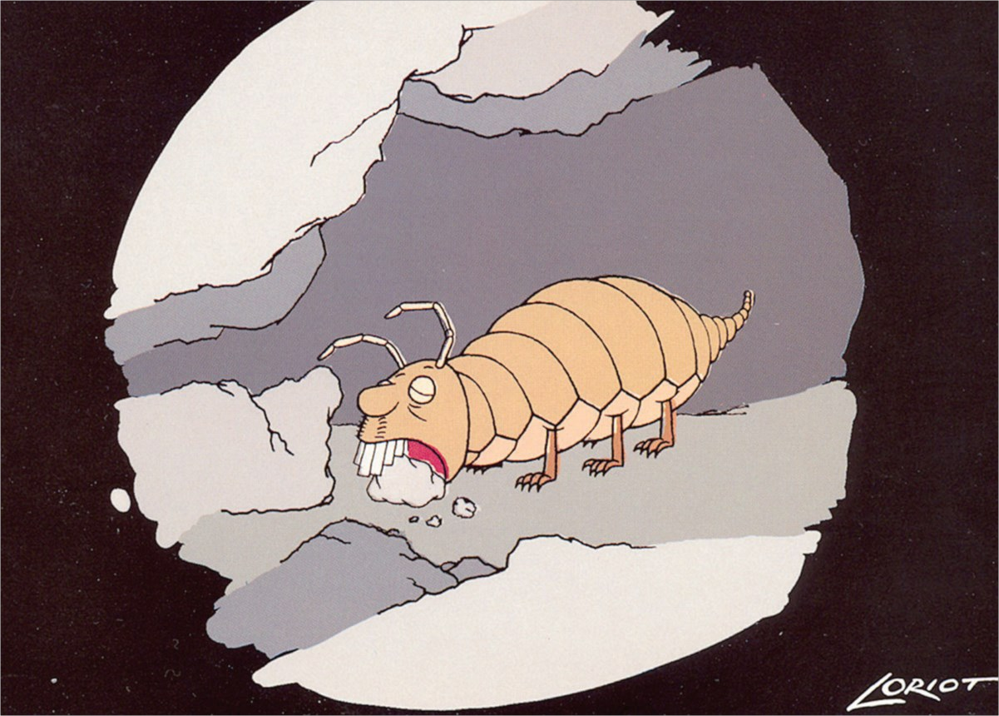

3.10 Bachelor Geografie: Gesellschaft und Umwelt
Liebe Studienanfänger des Bachelorstudiengangs Geografie: Herzlich willkommen in Bayreuth und in einem der wohl vielseitigsten Studienfächer, die hier angeboten werden.
Übrigens:
Für diverse Veranstaltungen (und fast alle Klausuren) erfolgt die Anmeldung elektronisch über cmlife. Für bestimmte Kurse kann dies auch über eLearning erfolgen.
Das Fach Geografie ist ein breit angelegtes Querschnittsfach, das dem Studierenden Kompetenzen von natur- über wirtschafts- bis hin zu sozialwissenschaftlichen Fragestellungen vermitteln soll. Kennzeichnend für Forschung, Lehre und Praxis sind der räumliche Bezug der Arbeiten und deren fächerübergreifende Vernetzung. Aufgrund dieser Interdisziplinarität und der Tatsache, dass die Geografie, wie bereits angeklungen, ein Brückenfach über mehrere Wissenschaftsbereiche hinweg ist, ergeben sich interessante und hochaktuelle Fragestellungen, Methoden und Theorien. Das ermöglicht ein großes Potenzial für vernetztes Denken und das Erkennen von Systemzusammenhängen. Dementsprechend vermittelt die Geografie spezifische Kenntnisse in der Lösung von komplexen Problemstellungen, die sowohl natürliche als auch wirtschaftliche und soziale Zusammenhänge betreffen.
Soviel erst einmal zur Theorie! Sicherlich seid ihr in eurem Umfeld schon öfter der Frage begegnet: “Und was machst du dann später als Geograph*in?“. Damit ihr zukünftig eine schlagfertige Antwort parat habt, hier einige typische Berufsfelder für Geografen:
- Räumliche Planung und Stadtentwicklung (z.B. Landes-, Regional- und Kommunalplanung, Quartiersmanagement)
- Regionale und kommunale Beratung und Wirtschaftsförderung
- Marketing und Marktforschung (öffentliche Auftraggeber und Privatwirtschaft)
- Standortplanung und Entwicklung, insbesondere im Bereich des Immobilienmarktes bei Banken und Versicherungen
- Verkehr- und Verkehrspolitik
- Umweltplanung, -schutz, -management, Hazardforschung bei Naturkatastrophen
- Entwicklungszusammenarbeit (z.B. GTZ)
- Tourismusmanagement und Destinationsnationsmanagement bei Touristikunternehmen
- Politik und Politikberatung, auch Wirtschaftsberatung
- Hochschule (Forschung und Lehre)
- Geoinformatische/Geodätische Unternehmen, Unternehmen der Fernerkundung
Trotzdem werdet ihr selten Stellenangebote finden, die konkret auf Geografen ausgeschrieben sind, da die Geografie aufgrund ihrer Vielfältigkeit leider kein klares Profil aufweist. Zum Berufseinstieg gibt es viele Möglichkeiten, auch wenn die Stelle eventuell gar nicht direkt für Geografen ausgeschrieben ist, ihr aber wegen eurer breiten und interdisziplinären Kenntnisse sehr wohl dafür geeignet seid.
Zitat für Zwischendurch:
“Die Vorlesung ist so leicht, dass jeder bestehen kann. WIRKLICH JEDER!”
Dr. Golembiowski (ehemaliger Mathematikdozent)
“In Bayreuth studieren ist etwas ganz Besonderes!” – Dieser Satz aus dem Leitbild der Universität Bayreuth gilt natürlich auch für den Studiengang Geografie:
Neben der fundierten Grundausbildung in den Semestern 1-4 könnt ihr euch in den Semestern 5 und 6 auf ein Themengebiet spezialisieren.
So stehen im Bereich der Humangeografie Bayreuther Kernkompetenzen wie Stadt- und Regionalentwicklung und die Geografische Entwicklungsforschung zur Auswahl.
Im Bereich der physischen Geografie kann zwischen den Vertiefungen Geomorphologie und Klimatologie gewählt werden.
Zitat für Zwischendurch:
“Wie riecht eigentlich Stickstoff?”
Studentin
Neben dem Hauptstudium sieht die Studienordnung ein sog. Kontextfach vor, aus dem ihr Leistungspunkte einbringen müsst, die bereits zur Bachelor-Endnote zählen. Hier steht ebenfalls ein breit gefächertes Angebot an praxisnahen Fächern aus verschiedenen Disziplinen zur Verfügung. Derzeit werden Klassiker wie Betriebs- und Volkswirtschaftslehre, verschiedene Sprachen, Rechtswissenschaften, Soziologie, Ethnologie aber auch Spezialfächer wie Biologie/Geoökologie oder angewandte (Geo-)Informatik angeboten. Höhepunkte eures Studiums werden die zahlreichen kleinen und großen Exkursionen sein, die nicht selten bis Südafrika oder gar Asien führen.
Übrigens:
Neue Schutzhüllen für den Studierendenausweis gibt es in der Studierendenkanzlei! Für lau!
Und für alle, die nach sechs Semestern Bachelor-Studium noch nicht genug haben, gibt es die Masterstudiengänge der Geografie.

Wenn ihr weitere Fragen zum Studiengang Geografie B. Sc. oder allgemeine Fragen zur Universität Bayreuth habt, kommt bei der Fachschaft Biologie, Chemie und Geowissenschaften vorbei oder löchert ältere Studierende des Studiengangs Geografie. Auch das Modulhandbuch gibt Aufschluss.
Wir, die Fachschaft BCG, wünschen allen Geografie-Erstsemestlern einen tollen und erfolgreichen Start ins Semester!